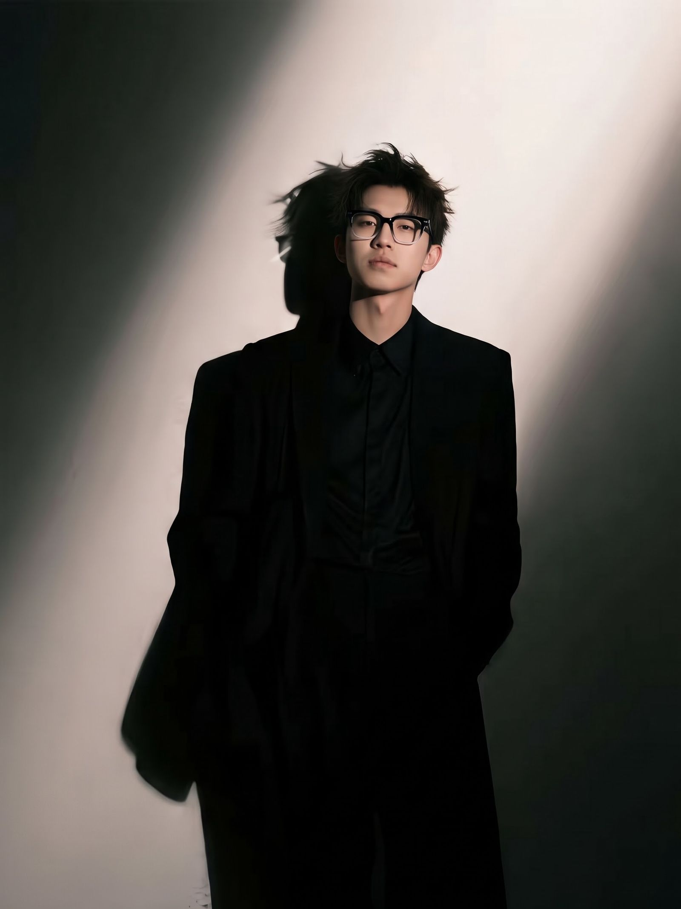
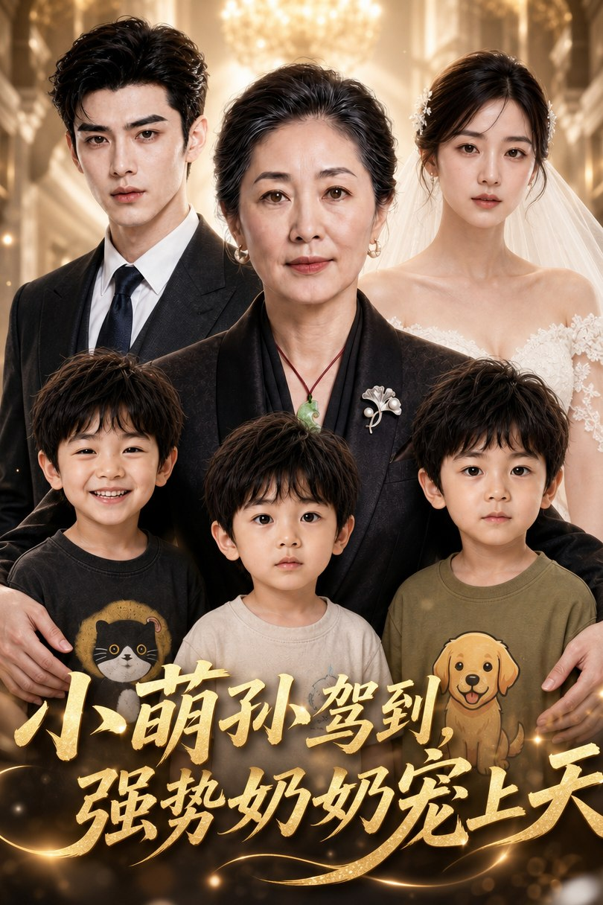

NO.01
红果短剧 · AIGC 全流程

周于凯，AIGC 视频创作专家、AI 短剧讲师。深耕 AIGC 视频领域，累计创作内容超 2000 分钟，在大量真实项目中反复打磨从创意到成片的完整创作流程。
作品覆盖红果剧场、TikTok 等主流平台，多部作品播放量突破千万级——完成了从"能生成"到"能传播"的实战验证。
兼具实战经验与教学能力：受邀为温州广电开展三期内部 AI 短剧专项培训，并为温州各区县文旅系统提供 AI 宣传片创作培训，助力传统行业实现 AI 内容升级。
红果短剧 · AIGC 全流程

马鞍山文旅 · 合作作品

强势奶奶宠上天 · AIGC 制作
短剧 · AIGC 制作

红果短剧 · AIGC 全流程
先创作、再教学——课堂上的每一个方法，都先在真实项目里跑通过。以创作者的身份讲创作，以讲师的身份做交付，让学员学到的是能直接上手的实战能力。
受邀为温州广播电视台开展三期内部 AI 短剧专项培训，系统输出从创作流程到平台经验的实战方法，帮助广电内容团队掌握 AI 短剧创作能力，推动 AI 内容生产在主流媒体内部的落地应用。
为温州各区县文旅系统提供 AI 宣传片创作培训，将地方文旅内容的表达需求与 AI 视频生产力对接，帮助文旅从业者用 AI 完成宣传片的策划与创作，助力传统行业实现 AI 内容升级。